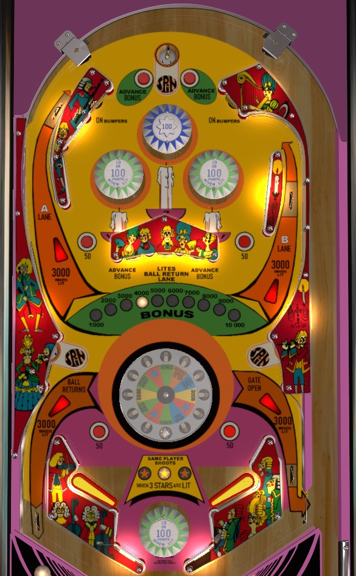

Not to be confused with Captain Fantastic and the Brown Dirty Cowboy (Bally, 1976), commonly known simply as Captain Fantastic.
Shoot to the top of the table repeatedly via the left orbit with the goal of landing in the top saucer as many times as possible. Any of the game's saucers spin the bonus wheel, which can award points, a star (3 stars = extra ball), build up the bonus to the maximum of 10,000, or collect a single, double, or triple bonus. Bonus is also built by the left and right standup targets in the center bank and the rollover buttons near the top saucer. Bonus is only collected as a wheel award, not at the end of the ball.
The main feature of Fan-Tas-Tic is the wheel. which gets spun any time the ball lands in any of the game's 3 saucers (top, lower left, or lower right). The wheel is set into the table and spins for about a second before a smaller ball inside the wheel settles into one of the holes, which awards you the corresponding prize, similar to the casino game roulette. There are 12 wedges to this wheel.
It's pretty difficult to use nudging or any other method to influence the wheel result. Since Wheel results pretty highly outweigh any of the rest of the miscellaneous scoring in the game, a competitive game of Fan-Tas-Tic frequently comes down to who spun the wheel the most. If you are somehow able to cradle the ball on a flipper and then backhand it into the closest spin saucer, do so repeatedly; however, since this very rarely seems to be possible, you're better off shooting the left orbit from the right flipper to get back to the top of the table, and from the left flipper, shoot the right orbit and use nudging or pop bumper luck to get back to the top saucer that way.
Bonus starts at 1,000 points and is advanced by the rollover buttons near the top saucer and the left and right standup targets in the center bank. It maxes out at 10,000 points. The bonus is never collected at the end of the ball, and can only be scored from one of the Wheel awards. The bonus value also never carries over, and resets back to 1,000 at the start of every turn for each player as well as after it is collected.
The top center blue pop bumper always scores 100 points. The other three pop bumpers in the game score 10 points, or 100 when lit. Hitting one of the On Bumpers standup targets near the top of the table scores no points but lights all pop bumpers for the rest of the current ball in play.
The bottom of the table is very unconventional, sporting a layout only seen in a small handful of late 1960s and early 1970s Williams games, most notably Spanish Eyes.
The flippers are very far apart and there is an entire bumper in between them. Below the bumper is actually a pretty small place for the ball to drain: some pretty impressive and weird looking saves are possible on Fan-Tas-Tic if the ball hits this bumper from below in such a way that it can build up momentum in the space around the bumper and "walk" itself back up into play. Don't give up on a ball too soon on this game, and if the ball is headed in what looks like a bad direction, try to nudge the pop bumper into it, because you never know what can happen.
The ball can drain underneath the flippers. When trying to save the ball by encouraging it to hit the between-flippers bumper, keep the flippers down as much as possible lest the ball hit a bumper, bounce off the underside of a flipper, and be sent where the sun don't shine.
It is also possible to be protected from out lane drains on both sides. The middle standup target in the center bank lights an automatic kickback in the left out lane, which turns itself off once used. One of the Wheel awards is Open Gate, which defends against one right out lane drain by putting the ball into the shooter lane for a replunge instead. Out lanes score 1,000 points, or 3,000 when the respective kickback or gate is lit.
There is no end of ball bonus. Extra ball is available for getting a Star award from the wheel 3 times in one ball. Maximum one extra ball per ball in play. Extra ball cannot be set to have a point value for competition/novelty play. There is no playfield special. Tilt ends the current ball in play only.